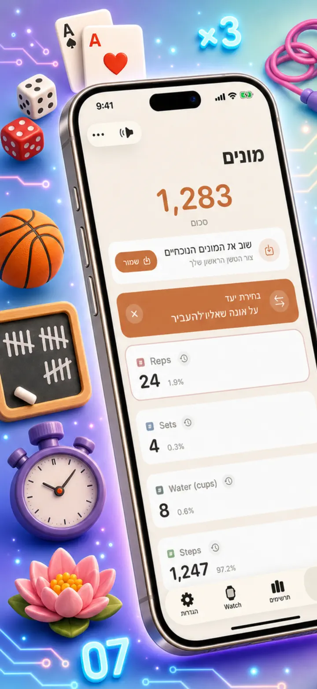
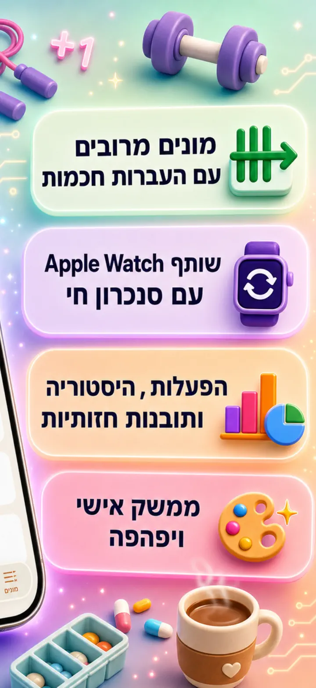
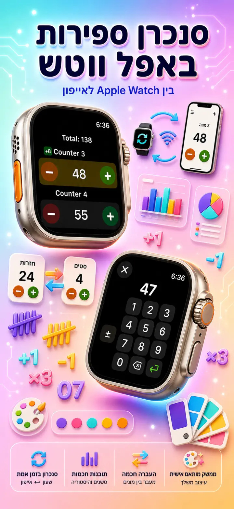
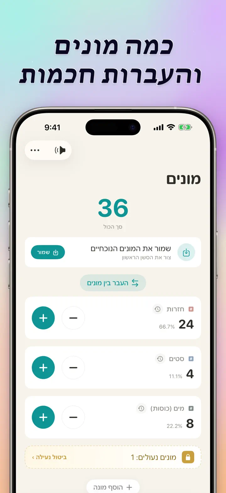
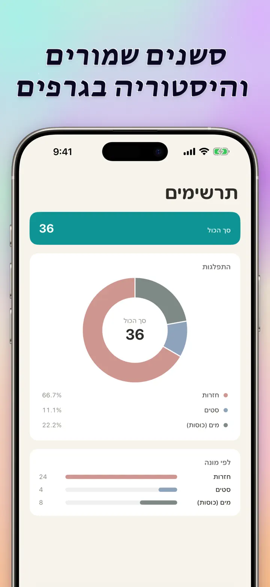
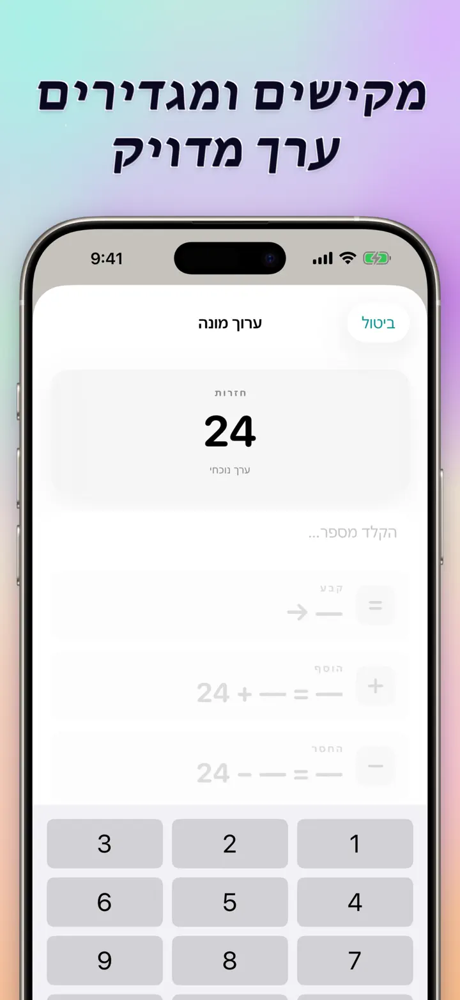
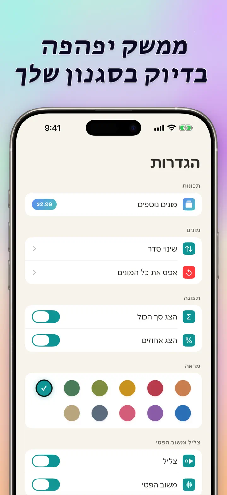
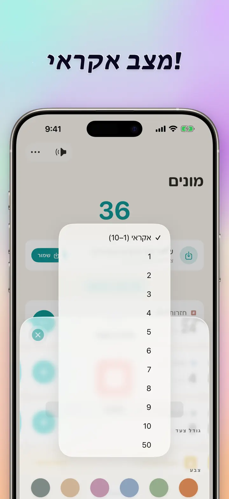

מונה 123
סנכרון Watch, קליקר, ציון
חדש: יישומונים במסך הבית — הקש +/- על היישומון בלי לפתוח את האפליקציה. מונה וקליקר עם סנכרון Apple Watch, מצב אקראי, גרפים והיסטוריה.
הורדה מה-App Store
על האפליקציה
מונה 123 הוא המונה המהיר והגמיש ל-iPhone, iPad ו-Apple Watch. תן לכל מונה שם, בחר צבע וספור הכול — סטים בחדר כושר, שורות סריגה, ספירת העומר, ניקוד בכיתה, מלאי, תוצאות משחק. הכול נשאר מקומי במכשיר ופועל גם בלי אינטרנט.
מונים מותאמים
- צור מונים נפרדים לפעילויות, משחקים, שגרות או רשימות
- שם וצבע משלו לכל מונה
- גרור לסידור מחדש
- לחיצה ארוכה לספירה מהירה ברצף
- אופליין מלא — בלי הרשמה, בלי ענן
הזנה ישירה ופעולות מרובות
- הקש על מונה להגדרה ישירה של ערך התחלתי — בלי איפוס לאפס
- +/- מרובה: שנה מונה בכל מספר בלחיצה אחת
- העברה: העבר ערך ממונה אחד לשני בלי פעולה כפולה
- צעד מותאם: לחיצה אחת מוסיפה 1, 5, 10, 100 או מה שתבחר
- תצוגה חיה של כל שינוי
מצב אקראי
- תן למונה להגריל ערך חדש מ-1 עד 10 בכל לחיצה
- הוסף או החסר ערכים אקראיים עם כפתורי + ו--
- שימושי לתרגולים, משחקים, פרסים, כיתה ושגרות
- כל לחיצה אקראית נשמרת בהיסטוריית המונה
סיכומים וגרפים
- סכום כולל של כל המונים במבט אחד
- תצוגת אחוזים: כמה כל מונה תורם לכלל
- גרף עמודות אינטראקטיבי — החלף בין ערך (#) לאחוז (%)
- מיון לפי ערך לדירוג מיידי
היסטוריה ושיתוף
- היסטוריה מלאה: כל הוספה, הפחתה ועריכה מתועדות
- שמור ערכות של מונים וטען אותן מחדש ברגע
- שתף הגדרות עם הקבוצה, התלמידים או חברים
- צפה בהיסטוריה כיומן לפי תאריך, סשנים מקובצים או סטטיסטיקות יום/שבוע/חודש
סנכרון חי עם APPLE WATCH
- עדכן מונה ב-iPhone או ב-Apple Watch ושניהם יישארו מסונכרנים
- אפליקציה אמיתית ונייטיבית ל-watchOS — לא סתם מלווה
- שמות, צבעים וערכים מסונכרנים על היד
- הקש לספירה, החזק לחזרה — ישירות מהשעון
- פועל עצמאית גם כשה-iPhone לא בהישג יד
ל-iPhone, iPad ו-APPLE WATCH
- פריסות מתאימות לכל גודל מסך
- iPad מציג יותר מונים בבת אחת, תומך ב-Split View
- פרטיות קודם: אחסון מקומי, בלי ענן, בלי חשבון
מושלם ל
- סטים וחזרות בחדר כושר
- שורות סריגה ועיניים בקרושה
- ספירת העומר, תהילים, מחרוזות תפילה
- ניקוד בכיתה ונוכחות
- כדורגל, כדורסל, כדורעף, כדוריד — ניקוד מהיר
- טניס שולחן
- מלאי וספירת מחסן
- משחקי קופסה, קלפים, שש-בש
- הקפות בריכה ומסלול
- תצפית בציפורים
- ספירת משתתפים באירועים
- מעקב אחר הרגלים ומטרות
הורד את מונה 123 והפוך כל ספירה לפשוטה — ברורה, מהירה, פרטית.
מדיניות פרטיות: https://masawata.net/privacy-policy.html תנאי שימוש: https://www.apple.com/legal/internet-services/itunes/dev/stdeula/
צילומי מסך







מונה 123
חדש: יישומונים במסך הבית — הקש +/- על היישומון בלי לפתוח את האפליקציה. מונה וקליקר עם סנכרון Apple Watch, מצב אקראי, גרפים והיסטוריה.
הורדה מה-App Store